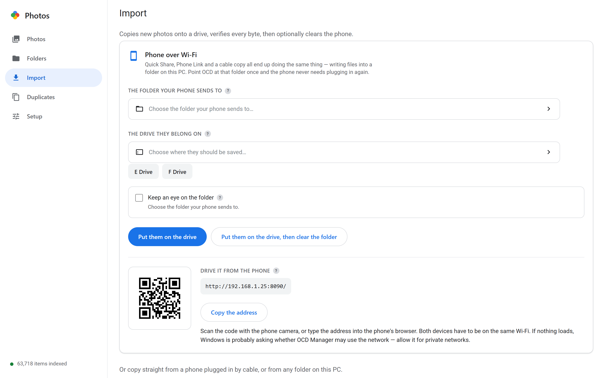

Your photos are already on the drive.
OCD Manager turns a computer with your portable drives plugged in into a private photo library: tens of thousands of photos that open instantly, a phone that sends new ones over Wi-Fi, and a duplicate cleaner that never deletes anything.
One file, about 8 MB. No installer, no account, no cloud. Also for Mac, Linux.

Built for drives, not for uploads
Most photo apps want your library in their cloud. This one keeps it where it already is — on the disk you own — and makes that pleasant to use.
Fast on slow drives
One scan reads the folders and keeps a small index of what is there. After that the grid comes from memory, not from the USB cable — a 5,000-photo folder opens in about a second.
Phone to drive, no cable
Share photos into a folder however you like — Quick Share, the browser, a cable. Press one button and they are copied, verified, and reported. The phone tells you when the folder is safe to clear.
Duplicates, handled
Finds copies by content, not by name, and shows you what it found before touching anything. The extras move into one folder you choose — flat, with their original names. You empty it when you are sure.
Three steps, then it is just a gallery
It runs on the computer the drives are plugged into. Every other device is a browser tab.
Download and start it
Double-click the file. A window opens — no installer, no setup wizard. Keep the console window behind it open while you use the app.
# or from a terminal, with your own paths
ocd-v0.1.4-windows-amd64.exe serve --port 8090 --data .\engine-dataAdd your folders
In Library, add the drives or folders you keep photos in. The first scan takes a few minutes; after that it is instant.
Browse, or point your phone at it
Scan the QR code in Import from the phone on the same Wi-Fi. The phone never touches the drive directly — it just asks the computer.
Download v0.1.4
One static binary per platform. Nothing else to install, no runtime, no dependencies. Start it and the page opens in its own window — no tabs, no address bar. Checksums are published with every release. From 0.1.2 onward the app can update itself: it shows a bar when a newer release exists and verifies the download before replacing the old binary.
Windows says that about any unsigned program that arrived through a browser. It is not a virus report; it is a missing certificate, and a certificate costs money and an identity check. The download is marked as “from the internet”, and that mark is what makes Windows stop and ask. Remove it once, then start the program:
Unblock-File .\ocd-v0.1.4-windows-amd64.exe
.\ocd-v0.1.4-windows-amd64.exeDownloading with curl.exe skips the browser and never adds the mark. Compare the two hashes before running it:
curl.exe -L -o ocd.exe https://github.com/charan-sai1/OCD/releases/download/v0.1.4/ocd-v0.1.4-windows-amd64.exe
curl.exe -L -s https://github.com/charan-sai1/OCD/releases/download/v0.1.4/SHA256SUMS.txt | Select-String windows-amd64
(Get-FileHash .\ocd.exe -Algorithm SHA256).Hash
.\ocd.exeIf Windows 11 says the app is blocked by Smart App Control, there is no workaround: that setting refuses every unsigned program. Turn it off in Windows Security, or wait for a signed release.
- On macOS, run
xattr -d com.apple.quarantine <file>andchmod +x <file>once after downloading. - Only the Windows x64 build has been run on real hardware so far. The macOS and Linux builds come from the same source and their file formats were checked, but they are not battle-tested yet.
- Every release ships SHA256SUMS.txt, listing every file on this page. Compare it with
Get-FileHashif you want to check a download.
What it deliberately does not do
Worth knowing before you move a library onto it.
No cloud, no account
Nothing leaves your network except one request every six hours: the app asks GitHub for the newest version number so it can tell you an update exists. It sends nothing about your photos. There is no sign-in, no sync service, and no telemetry.
No deleting
The app copies and moves. It never hard-deletes a photo. Duplicates go to a folder you pick, and you decide when that folder is emptied.
No password
The page is open to anything on your network. Run it on a network you trust, and keep the port closed when you are away.